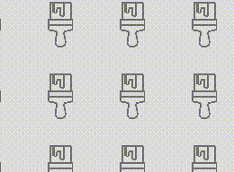

TileControl (Archived)
Warning
This component has been archived and is not available in the current version of the Windows Community Toolkit.
While there are no immediate plans to port this component to 8.x, the community is welcome to express interest or contribute to its inclusion. The control could be ported with enough community interest.
For more information:
- GitHub tracking issue for TileControl port
- Community Toolkit GitHub repository
- Documentation feedback and suggestions
Original documentation follows below.
The TileControl is a control that repeats an image many times. It enables you to use animation and synchronization with a ScrollViewer to create parallax effect. XAML or Microsoft Composition are automatically used to render the control.
Syntax
<controls:TileControl x:Name="Tile1" OffsetX="-10" OffsetY="10" IsAnimated="True"
ScrollViewerContainer="{x:Bind FlipView}" ParallaxSpeedRatio="1.2"/>
Sample Output

Properties
| Property | Type | Description |
|---|---|---|
| AnimationDuration | double | Gets or sets a duration for the animation of the tile |
| AnimationStepX | double | Gets or sets the animation step of the OffsetX |
| AnimationStepY | double | Gets or sets the animation step of the OffsetY |
| ImageAlignment | ImageAlignment | Gets or sets the alignment of the tile when the ScrollOrientation is set to Vertical or Horizontal. Valid values are Left or Right for ScrollOrientation set to Horizontal and Top or Bottom for ScrollOrientation set to Vertical |
| ImageSource | Uri | Gets or sets the uri of the image to load |
| IsAnimated | bool | Gets or sets a value indicating whether the tile is animated or not |
| IsCompositionSupported | bool | Gets a value indicating whether the platform supports Composition |
| OffsetX | double | Gets or sets an X offset of the image |
| OffsetY | double | Gets or sets an Y offset of the image |
| ParallaxSpeedRatio | int | Gets or sets the speed ratio of the parallax effect with the ScrollViewerContainer |
| ScrollOrientation | ScrollOrientation | Gets or sets the scroll orientation of the tile. Less images are drawn when you choose the Horizontal or Vertical value |
| ScrollViewerContainer | FrameworkElement | Gets or sets a ScrollViewer or a frameworkElement containing a ScrollViewer. The tile control is synchronized with the offset of the scrollviewer |
Events
| Events | Description |
|---|---|
| ImageLoaded | The image loaded event |
Sample Project
TileControl Sample Page Source. You can see this in action in the Windows Community Toolkit Sample App.
Default Template
TileControl XAML File is the XAML template used in the toolkit for the default styling.
Requirements
| Device family | Universal, 10.0.16299.0 or higher |
|---|---|
| Namespace | Microsoft.Toolkit.Uwp.UI.Controls |
| NuGet package | Microsoft.Toolkit.Uwp.UI.Controls |